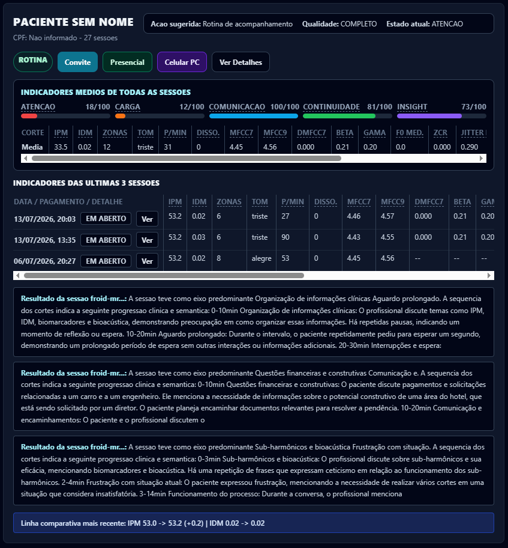
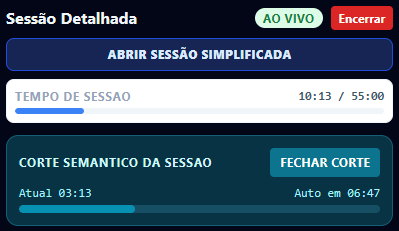

Frequency Recognition of Internal Dynamics
Toda a inteligência que se propõe a ajudar o ser humano a se compreender nasce pequena diante da imensidão daquilo que busca. Ele crescerá exponencial e indefinidamente rumo a se tornar a maior e mais útil inteligência de auxílio a quem procura compreender a metafísica que envolve a relação coerente entre a alma e suas expressões: aquilo que a voz, maior expressão da psique humana, revela, a intenção das palavras e o que a face confessa e, a verdade que emerge quando as três se encontram. Porque dar aos humanos condições de se entenderem melhor é, no fim, cuidar de sua própria existência.
Visão geral
Três camadas de sinal, processadas em tempo real e sempre comparadas contra uma calibração individual de 60 segundos no início de cada sessão.
Frequência fundamental (F0), coeficientes cepstrais (MFCC) e suas derivadas temporais, taxa de cruzamento por zero — extraídos continuamente e comparados à linha de base do próprio paciente.
Rastreamento de 468 pontos faciais e classificação de Unidades de Ação (FACS) com modelagem temporal onset–apex–offset.
As 12 Zonas de Percepção e dois índices de síntese — o Índice de Potência Multimodal (IPM), o "velocímetro" da energia e da vitalidade psicomotora, e o Índice de Desvio Multimodal (IDM), a "bússola" da coerência entre voz e face — reduzem os sinais acústico-faciais a uma leitura visual pensada para apoiar, não substituir, a escuta clínica.

Áudio a 48 kHz, janelamento de Hamming, FFT executada no navegador via Web Audio API (não há dependência de DSP no backend Python — apenas FastAPI/DuckDB/LLMs para explicação e transcrição). Vídeo processado localmente a 30+ FPS para os 468 pontos faciais.
Todos comparados contra o baseline travado nos primeiros 60 segundos da sessão (baseline_mfcc7, baseline_mfcc9, etc.).
Transparência
Diferente da maioria das ferramentas do setor, o FROID separa explicitamente as duas camadas — e convida você a conferir cada uma.
F0, MFCC, jitter/shimmer e dinâmica de Unidades de Ação como sinais associados a estados afetivos e retardo psicomotor têm décadas de pesquisa publicada por trás — veja as referências.
As 12 Zonas de Percepção, o Multiplicador Facial de Dissonância e os índices IPM/IDM são a forma FROID de organizar esses sinais visualmente. Não são achados de estudos clínicos publicados — são heurística de produto, e tratamos isso como tal.
Porque misturar as duas coisas sem aviso é o tipo de coisa que engana clínicos e prejudica pacientes. Qualquer alegação de diagnóstico automatizado é falsa — o FROID é ferramenta de apoio, não instrumento diagnóstico validado.
A estrutura de 12 zonas mapeadas a notas da escala cromática é uma transposição inspirada em tecnologia comercial de biofeedback de voz, adaptada pela equipe FROID como interface de visualização — não é neurociência publicada.
Para quem é

Psiquiatras, psicólogos e terapeutas que querem uma camada adicional de leitura objetiva durante o atendimento — sem perder tempo com ferramentas que não se integram à sessão.
Frontend em React + Vite + TypeScript (froid-dashboard), backend FastAPI com DuckDB para analytics anônimo e ChromaDB para RAG do assistente "FROID Explica" (froid-server). Transcrição via GPT-4o-transcribe; explicações via Gemini 1.5 Pro/GPT-4o — sempre sobre métricas já calculadas, nunca gerando os valores acústicos.
Controle de acesso profissional por sessão, com consumo de crédito por atendimento e vínculo de titularidade por relatório (_can_access_report, _professional_access_status).
O diferencial
Um assistente LLM-RAG que responde, em linguagem clínica, tudo sobre a leitura da sessão — e cruza a sua carteira de pacientes com o Data-Froid anônimo global. Vem com 22 prompts prontos e você ainda cria os seus.
"O que significa esta dissonância?", "o que o IPM sugere?" — respostas fundamentadas sobre métricas já calculadas.
"Este paciente está acima da média em risco?", "casos mais parecidos (top 5)?" — força estatística de milhares de sessões anônimas.
Crie prompts na sua área de configurações — e, com o tempo, valide empiricamente IPM, IDM e as demais métricas.
Transparência · LGPD
Por lei, o paciente é o proprietário das suas informações. O FROID leva isso a sério: um portal próprio, com login separado do profissional, onde o paciente vê e gerencia tudo o que é seu.
Resultados das sessões finalizadas: métricas principais, linha de base, cortes/resumos e dissonâncias — a mesma leitura que apoia o seu profissional, agora nas suas mãos.
Dados cadastrais básicos sob seu controle, em linha com a LGPD (Lei 13.709/2018) — o direito de acesso e gestão das próprias informações em um só lugar.
Baixe o resultado de cada sessão individualmente ou todos os resultados em um único arquivo — portabilidade real, sem pedidos nem espera.
Providências técnicas aplicadas na plataforma para manter seus dados confidenciais: